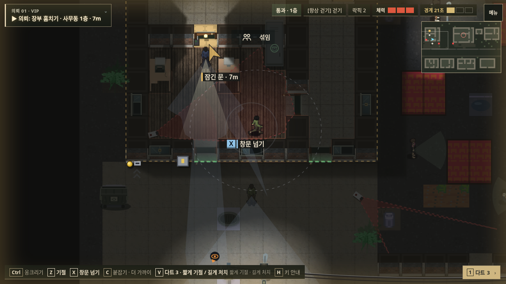
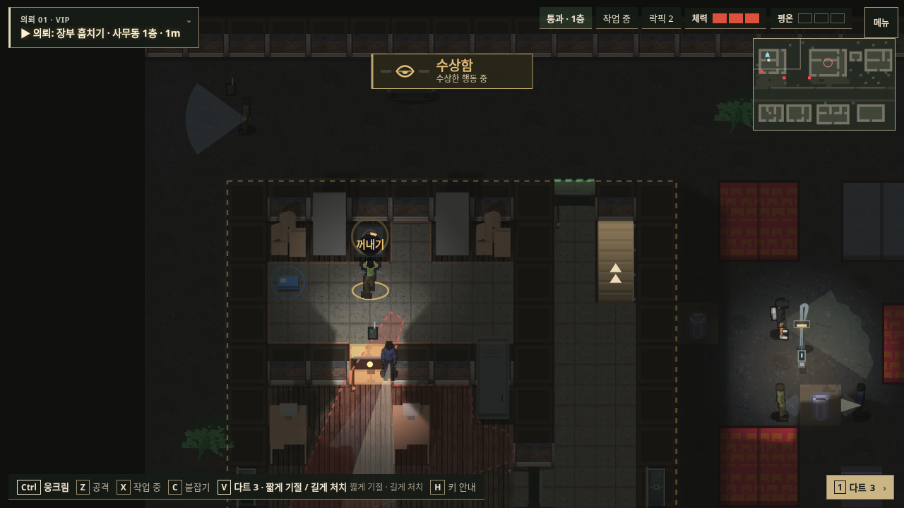

<!doctype html><html lang="ko"><meta charset="utf-8"><meta name="viewport" content="width=device-width,initial-scale=1"><title>야행 · 소개 자료</title><style>*{box-sizing:border-box}body{margin:0;background:#171b19;color:#e1ddcf;font:16px/1.7 system-ui,sans-serif}main{max-width:1000px;margin:auto;padding:28px 20px 60px}h1{font-size:32px}h2{margin-top:30px}a{color:#e0c58a}nav{display:flex;gap:16px;flex-wrap:wrap;margin:20px 0}video,img{display:block;max-width:100%;width:100%;border:1px solid #4c5349}figure{margin:22px 0}figcaption{font-size:14px;margin-top:6px;color:#b6b9ac}pre{white-space:pre-wrap;background:#232a24;padding:20px;border:1px solid #4c5349;font:inherit}button{background:#d5c69f;color:#171b19;border:0;padding:10px 18px;font:inherit;cursor:pointer}</style><main><h1>야행 소개 자료</h1><p>기존 2D 테스트 버전의 실제 플레이 영상과 스크린샷입니다.</p><nav><a href="yahaeng-dc-pack.zip" download>영상·사진·문구 한 번에 다운로드</a><a href="yahaeng-play.mp4" download>약 23초 MP4</a><a href="dc-post.txt" download>소개 문구 TXT</a><a href="/">게임 실행</a></nav><video src="yahaeng-play.mp4" controls playsinline preload="metadata" poster="01-title.png"></video><h2>사진 3장</h2><figure><a href="01-title.png" download></a><figcaption>1. 메인 화면 · 누르면 원본 저장</figcaption></figure><figure><a href="02-infiltration.png" download></a><figcaption>2. 변장 후 실내 잠입</figcaption></figure><figure><a href="03-objective.png" download></a><figcaption>3. 장부 회수</figcaption></figure><h2>게시글</h2><button id="copy" type="button">문구 복사</button><pre id="post"></pre><script>fetch('dc-post.txt').then(r=>r.text()).then(t=>document.getElementById('post').textContent=t);document.getElementById('copy').onclick=async()=>{try{await navigator.clipboard.writeText(document.getElementById('post').textContent);document.getElementById('copy').textContent='복사됨'}catch{document.getElementById('post').focus()}};</script></main></html>
